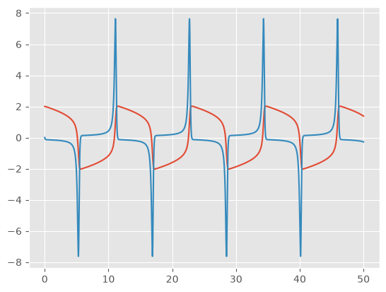
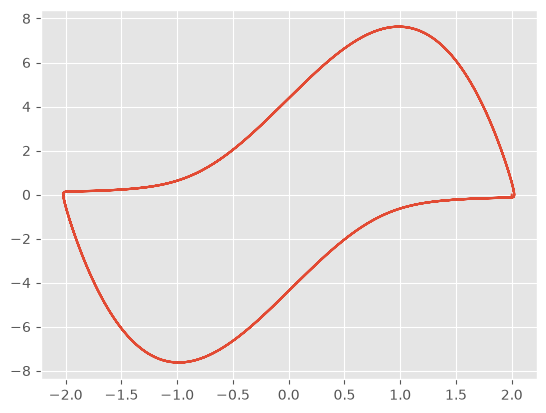

Funciones regulares definidas matemáticamente#
Regla del trapecio#
Para obtener la regla trapezoidal para aproximar \(\int_{a}^{b}f(x)~\mathrm{d}x\), sea \(x_{0} = a\), \(x_{1} = b\), \(h = b − a\) se utiliza el polinomio de Lagrange
Entonces
Aplicando el teorema del valor medio ponderado para integrales al término del error para algún \(\xi \in (x_{0} , x_{1} )\)
Esto implica que
Definiendo la variable \(h:=x_{1}-x_{0}\) obtenemos la siguiente regla
Regla de Simpson#
La regla de Simpson resulta de integrar en el intervalo \([a, b]\) el segundo polinomio de Lagrange con nodos equiespaciados \(x_{0} = a\), \(x_{2} = b\) y \(x_{1} = a + h\), donde \(h:= (b − a)/2\). Por lo tanto
Esta ecuación permite obtener un término de error de orden \(O(h^{4})\) que involucra a \(f^{(3)}\). No obstante, es posible deducir un término de orden superior que involucra a \(f^{(4)}\). Para ello suponga que \(f\) se expande en el tercer polinomio de Taylor alrededor de \(x_{1}\). Entonces, para cada \(x\) en \([x_{0}, x_{2}]\), existe un número \(\xi(x)\) en \((x_{0}, x_{2})\) con
y
Para algún número \(x_{1} \in (x_{0},x_{2})\), el teorema de valor medio ponderado para integrales implica que
Sin embargo, \(h=x_{2}-x_{1}=x_{1}-x_{0}\) entonces
mientras que
Por consiguiente
Reemplazando \(f''(x_{1})\), tenemos
Finalmente, considerando que los valores \(\xi_{1}\) y \(\xi_{2}\) de esta expresión pueden sustituirse por un valor común \(\xi \in (x_{0}, x_{2})\), tenemos
import numpy as np
import matplotlib.pyplot as plt
# Suprimir advertencias menores de integración durante los bucles de optimización
import warnings
warnings.filterwarnings("ignore")
# Configurar el estilo de graficación para una mejor visualización
plt.style.use('ggplot')
def regla_trapecio(f, a, b, n=1):
"""
Aproxima la integral definida de f(x) desde a hasta b usando la regla del trapecio.
- Si n=1, utiliza la regla simple: h/2 * [f(x0) + f(x1)]
- Si n>1, utiliza la regla compuesta.
"""
h = (b - a) / n
x = np.linspace(a, b, n + 1)
y = f(x)
if n == 1:
return (h / 2) * (y[0] + y[1])
else:
# Forma compuesta: h/2 * [f(x_0) + 2*f(x_1) + ... + 2*f(x_{n-1}) + f(x_n)]
return (h / 2) * (y[0] + 2 * np.sum(y[1:-1]) + y[-1])
def regla_simpson(f, a, b, n=2):
"""
Aproxima la integral definida de f(x) desde a hasta b usando la regla de Simpson 1/3.
- 'n' debe ser un número par.
- Si n=2, utiliza la regla simple: h/3 * [f(x0) + 4*f(x1) + f(x2)]
"""
if n % 2 != 0:
raise ValueError("El número de subintervalos 'n' debe ser par para la regla de Simpson.")
h = (b - a) / n
x = np.linspace(a, b, n + 1)
y = f(x)
if n == 2:
return (h / 3) * (y[0] + 4 * y[1] + y[2])
else:
# Forma compuesta: separando los términos pares de los impares
suma_impares = np.sum(y[1:-1:2])
suma_pares = np.sum(y[2:-2:2])
return (h / 3) * (y[0] + 4 * suma_impares + 2 * suma_pares + y[-1])
def f_test(x):
return np.exp(-x**2)
a, b = 0.0, 1.0
print("Integrando f(x) = e^(-x^2) en el intervalo [0, 1]\n")
# 1. Aplicando las Reglas Simples
integral_trap_simple = regla_trapecio(f_test, a, b, n=1)
integral_simp_simple = regla_simpson(f_test, a, b, n=2)
print("--- Reglas Simples ---")
print(f"Trapecio simple (n=1): {integral_trap_simple:.6f}")
print(f"Simpson simple (n=2): {integral_simp_simple:.6f}\n")
# 2. Aplicando las Reglas Compuestas
n_tramos = 10
integral_trap_comp = regla_trapecio(f_test, a, b, n=n_tramos)
integral_simp_comp = regla_simpson(f_test, a, b, n=n_tramos)
print(f"--- Reglas Compuestas (n={n_tramos}) ---")
print(f"Trapecio compuesta: {integral_trap_comp:.6f}")
print(f"Simpson compuesta: {integral_simp_comp:.6f}\n")
# 3. Valor de referencia exacto usando scipy
valor_real, error_estimado = quad(f_test, a, b)
print("--- Referencia ---")
print(f"Valor real (scipy.integrate.quad): {valor_real:.6f}")
Integrando f(x) = e^(-x^2) en el intervalo [0, 1]
--- Reglas Simples ---
Trapecio simple (n=1): 0.683940
Simpson simple (n=2): 0.747180
--- Reglas Compuestas (n=10) ---
Trapecio compuesta: 0.746211
Simpson compuesta: 0.746825
--- Referencia ---
Valor real (scipy.integrate.quad): 0.746824
Aplicaciones en sistemas de primer orden#
Considere un problema de valor inicial de la forma
integrando por ambos lados de la igualdad en el intervalo \([t_{n}, t_{n+1}]\), tenemos
Método del trapecio implícito (Adams-Moulton de 2do orden)#
Aplicando la regla del trapecio a la integral anterior, obtenemos
Dado que \(y_{n+1}\) aparece en ambos lados (implícito) es necesario encontrar un algoritmo de búsqueda de raíces como Newton-Raphson para despejarlo.
Para resolver un sistema mediante el método del trapecio implícito, necesitamos encontrar la raíz de una ecuación no lineal en cada paso de tiempo. Para encontrar \(y_{n+1}\) definimos una función residual \(G\left(y_{n+1} \right)\) que debe ser igual a cero
Aplicando el método de Newton-Raphson multivariable, la iteración para actualizar la suposición inicial \(y_{n+1}^{(k)}\) es
donde \(J_{G}\) es la matriz Jacobiana del residual con respecto a \(y_{n+1}\)
def newton_raphson(f, Jf, tn, yn, h, tol=1e-6, max_iter=50):
t_next = tn + h
I = np.eye(len(yn))
# Implementamos una parte predictora
# Metodo de Euler hacia adelante
y_next = yn + h * f(tn, yn)
f_n = f(tn, yn)
for _ in range(max_iter):
f_next = f(t_next, y_next)
# Evaluamos el residual G(y_{n+1})
G = y_next - yn - (h/2) * (f_n + f_next)
# Evaluamos el Jacobiano de G
JG = I - (h/2) * Jf(t_next, y_next)
# Computacionalmente mas eficiente que invertir G
# JG * delta_y = -G
delta_y = np.linalg.solve(JG, -G)
# Actualizamos
# y_next = y_next + delta_y
y_next = y_next + delta_y
# Criterio de convergencia
if np.linalg.norm(delta_y) < tol:
return y_next
print(f"Newton-Raphson no converge en t={t_next}")
return y_next
def trapecio_implicito(f, Jf, tspan, y0, h):
t0, tfin = tspan
t = np.arange(t0, tfin + h, h)
# Reservamos espacio de memoria
y = np.zeros((len(t), len(y0)))
y[0] = y0
for k in range(len(t)-1):
y[k+1] = newton_raphson(f, Jf, t[k], y[k], h)
return t, y
def van_der_pol(t, x):
# x[0] = posicion
# x[1] = velocidad
dx1 = x[1]
dx2 = mu * (1 - x[0]**2) * x[1] - x[0]
return np.array([dx1, dx2])
def Jacobiano_vanderpol(t, x):
J = np.zeros((2, 2))
J[0, 0] = 0.0
J[0, 1] = 1.0
J[1, 0] = -2.0 * mu * x[0] * x[1] - 1.0
J[1, 1] = mu * (1 - x[0]**2)
return J
# Oscilador de Van der Pol
mu = 5 # parametro de rigidez (mu >>)
# Condiciones iniciales
y0 = np.array([2.0, 0.0])
tspan = [0, 50]
h = 1e-2
# Ejecutamos el integrador
t_eval, y_eval = trapecio_implicito(
f=van_der_pol,
Jf=Jacobiano_vanderpol,
tspan=tspan,
y0=y0,
h=h)
plt.figure()
plt.plot(t_eval, y_eval[:,0])
plt.plot(t_eval, y_eval[:,1])
plt.figure()
plt.plot(y_eval[:,0], y_eval[:,1])
plt.show()


## Integración de Romberg
## Métodos de cuadratura adaptativa